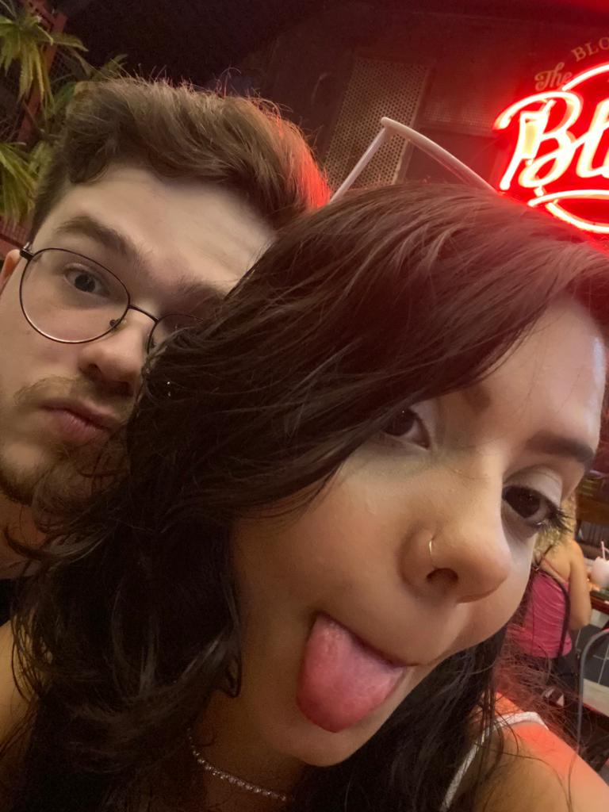

To fazendo esse texto pra você saber o quão especial você é pra mim, eu sou horrível com cartinha e sou muito tímido então vim aqui da minha forma de dizer tudo que eu sinto.
Bom, eu nunca imaginei que a gente estaria aqui, foi uma mensagem tão despretenciosa no snap só pra jogar conversa fora que acabou virando um turbilhão de emoções, risadas, histórias e momentos. Nossa conexão é única.
Queria te dizer que você é muito importante pra mim, sempre vai ser, e que eu amo o que a gente tem!
"Ah não eu sou uma Ave"
Essa foi uma das nossas primeiras piadinhas internas que eu sou apaixonado, amo lembrar dos nossos momentos no Discord, nossas primeiras fugas pra outras salas privadas
E um dos mais marcantes, o famoso AQUARIO, foram tantos momentos que é difícil pontuar aqui qual eu gosto mais, eu simplesmente amo lembrar de todos os momentos com você, tanto os difíceis quanto os perfeitos, por que foram eles que moldaram nossa amizade, nossa conexão e nossa relação num todo, nunca senti ser tão parecido assim com alguém na minha vida.
Eu espero que a gente continue nos aproximando cada vez mais, e que a cada dia que passe eu possa te mostrar o quanto eu amo você e o quanto eu sou sortudo de ter você na minha vida. Espero que goste do presente. Ainda estou procurando um com a nossa história envolvida, enfim, EU TE AMO AVE
 REGRAS DO PRESENTE